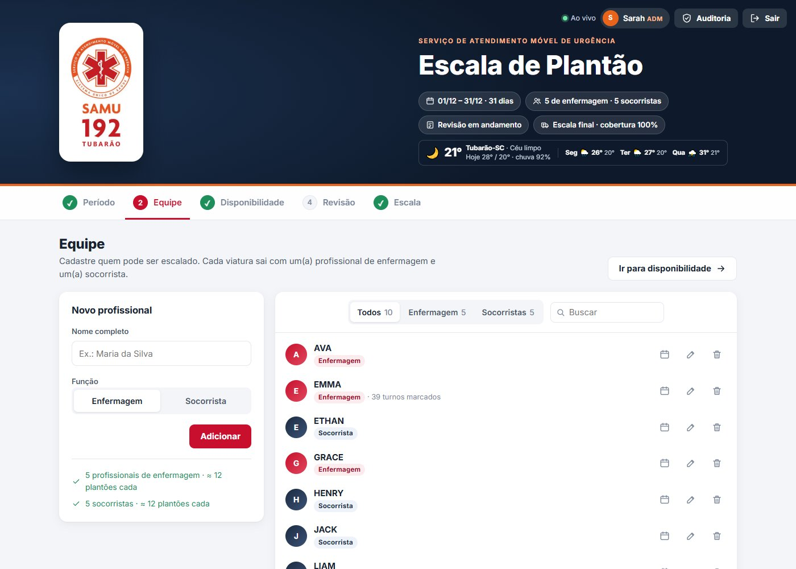
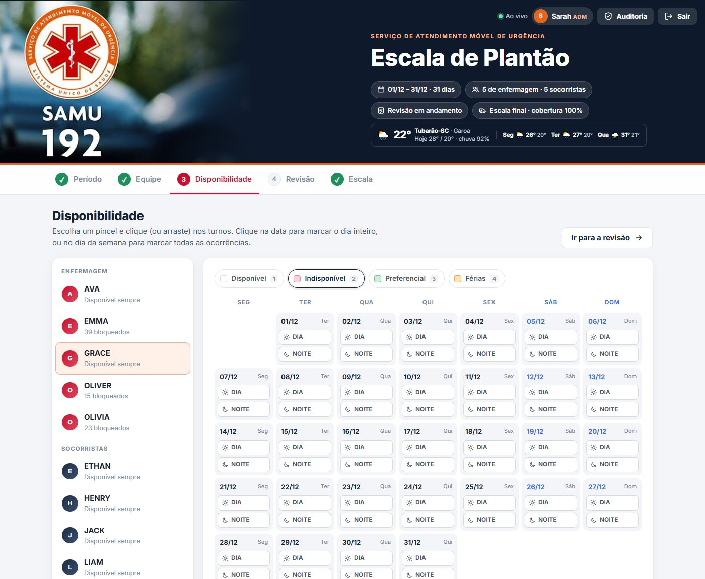
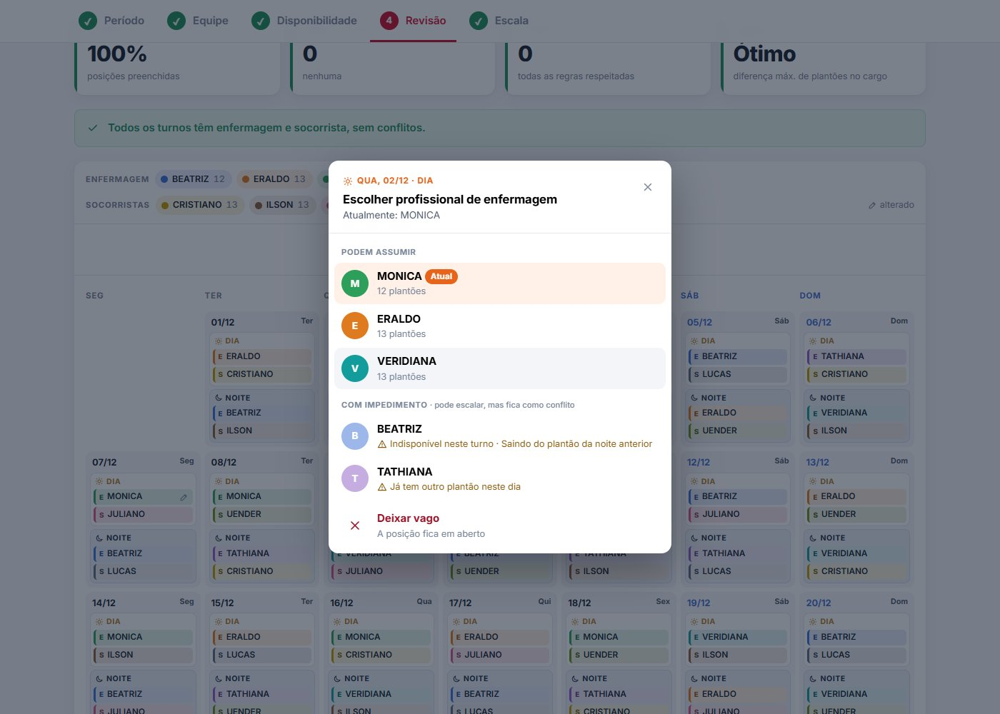
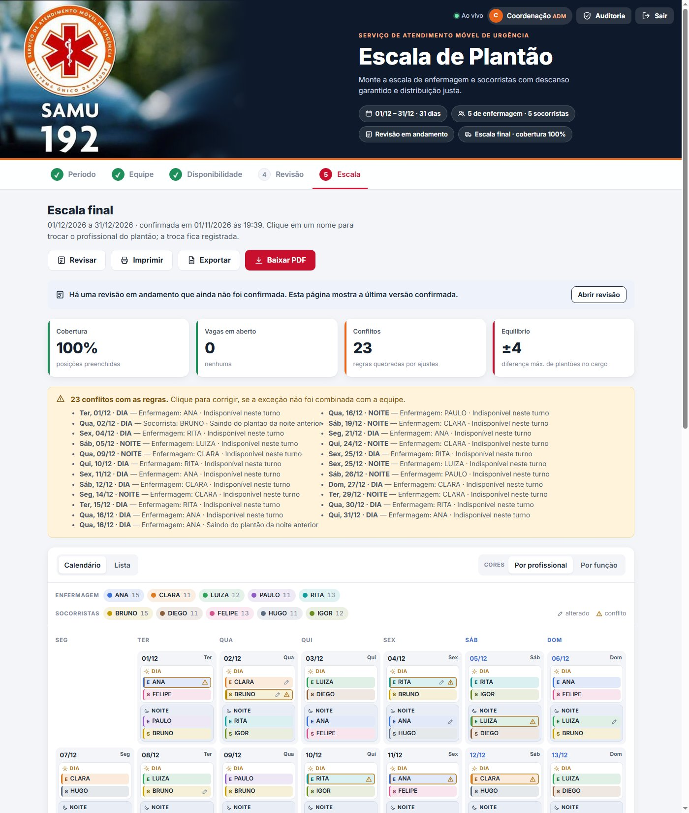
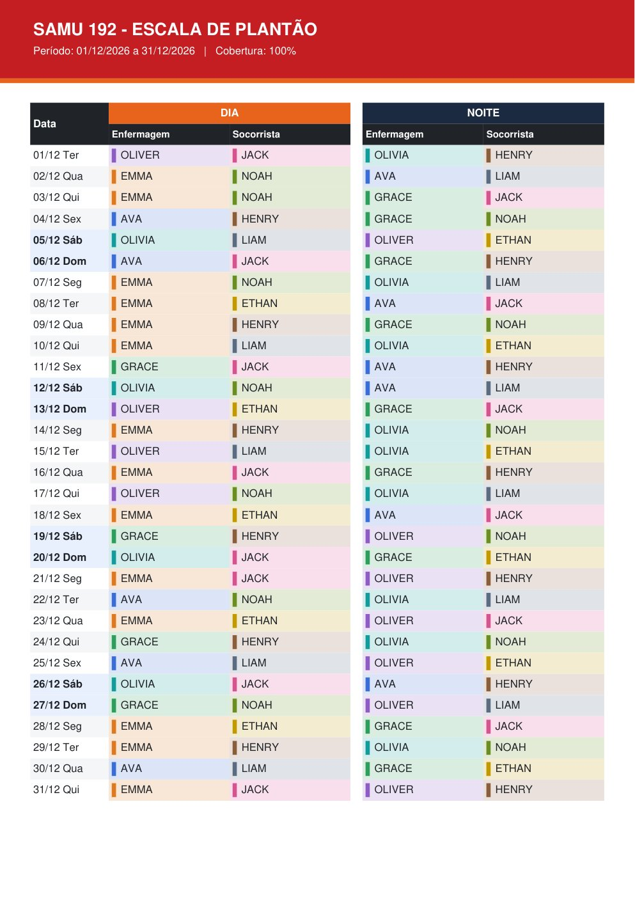

<title>Escala de Plantão SAMU 192</title>
<meta name="claude:viewport-fit-sides" content="cover">
<link rel="preconnect" href="https://fonts.googleapis.com">
<link rel="preconnect" href="https://fonts.gstatic.com" crossorigin>
<link href="https://fonts.googleapis.com/css2?family=Barlow+Condensed:wght@600;700;800&family=IBM+Plex+Sans:ital,wght@0,400;0,500;0,600;1,400&family=IBM+Plex+Mono:wght@500;600&display=swap" rel="stylesheet">
<style>
/* Layout: estudo de caso em coluna única de leitura, com faixas de cor que
   lembram a pintura da viatura (vermelho + filete laranja) e figuras largas. */
:root {
  --bg: #F6F7F9;
  --surface: #FFFFFF;
  --ink: #142033;
  --ink-2: #4B5869;
  --line: #DCE1E8;
  --red: #C8102E;
  --orange: #E8641B;
  --navy: #0E1A2B;
  --good: #1E8E5A;
  --code-bg: #EEF1F5;
  --font-display: "Barlow Condensed", "Arial Narrow", sans-serif;
  --font-body: "IBM Plex Sans", system-ui, -apple-system, "Segoe UI", sans-serif;
  --font-mono: "IBM Plex Mono", ui-monospace, Consolas, monospace;
}
@media (prefers-color-scheme: dark) {
  :root:not([data-theme="light"]) {
    --bg: #0B121D; --surface: #121C2B; --ink: #E6EBF2; --ink-2: #A3AFBF; --line: #253247;
    --red: #F0566B; --orange: #F38A4B; --navy: #070D16; --good: #4CC28A; --code-bg: #182436;
    color-scheme: dark;
  }
}
:root[data-theme="dark"] {
  --bg: #0B121D; --surface: #121C2B; --ink: #E6EBF2; --ink-2: #A3AFBF; --line: #253247;
  --red: #F0566B; --orange: #F38A4B; --navy: #070D16; --good: #4CC28A; --code-bg: #182436;
  color-scheme: dark;
}

* { box-sizing: border-box; }
body {
  background: var(--bg); color: var(--ink);
  font: 16px/1.65 var(--font-body);
}
.wrap {
  max-width: 980px; margin: 0 auto;
  padding-left: max(16px, env(safe-area-inset-left, 0px));
  padding-right: max(16px, env(safe-area-inset-right, 0px));
}
.prose { max-width: 68ch; }
h1, h2, h3 { font-family: var(--font-display); text-wrap: balance; margin: 0; line-height: 1.05; letter-spacing: .005em; }
h2 { font-size: clamp(1.9rem, 4vw, 2.5rem); font-weight: 800; text-transform: uppercase; }
h3 { font-size: 1.35rem; font-weight: 700; }
p { margin: 0; }
a { color: var(--red); text-underline-offset: 3px; }
a:focus-visible, button:focus-visible { outline: 3px solid var(--orange); outline-offset: 2px; }
code { font-family: var(--font-mono); font-size: .88em; background: var(--code-bg); padding: 1px 6px; border-radius: 5px; }

/* ---------- Capa ---------- */
.cover { background: #0E1A2B; color: #fff; border-bottom: 5px solid #E8641B; }
.cover .wrap { display: grid; grid-template-columns: 240px 1fr; gap: 40px; align-items: center; padding-block: 48px 44px; }
.cover__logo { border-radius: 14px; overflow: hidden; aspect-ratio: 1; max-width: 100%;
  background: url("img/samu.jpg") 4% 52% / auto 150% no-repeat; }
.eyebrow { font-family: var(--font-mono); font-size: .76rem; letter-spacing: .14em; text-transform: uppercase; color: #FFB48A; }
.cover h1 { font-size: clamp(2.6rem, 7vw, 4.4rem); font-weight: 800; text-transform: uppercase; margin: 10px 0 14px; }
.cover h1 span { color: #FF5A6E; }
.cover__lead { color: #C9D3E1; font-size: 1.1rem; max-width: 52ch; }
.meta { display: flex; flex-wrap: wrap; gap: 10px 28px; margin-top: 26px; }
.meta div { display: grid; }
.meta dt { font-family: var(--font-mono); font-size: .7rem; letter-spacing: .12em; text-transform: uppercase; color: #8FA0B8; }
.meta dd { margin: 0; font-weight: 600; }

/* ---------- Seções ---------- */
section { padding-block: 64px 8px; }
.section-head { display: grid; gap: 10px; margin-bottom: 24px; }
.kicker { font-family: var(--font-mono); font-size: .76rem; letter-spacing: .14em; text-transform: uppercase; color: var(--red); font-weight: 600; }
.stack { display: grid; gap: 16px; }
.muted { color: var(--ink-2); }

.pains { display: grid; grid-template-columns: repeat(2, minmax(0, 1fr)); gap: 14px; margin-top: 24px; }
.pain { background: var(--surface); border: 1px solid var(--line); border-radius: 12px; padding: 18px 20px; }
.pain h3 { font-size: 1.15rem; text-transform: uppercase; margin-bottom: 6px; color: var(--ink); }
.pain p { color: var(--ink-2); font-size: .95rem; }

.rules { display: grid; grid-template-columns: repeat(3, minmax(0, 1fr)); gap: 0; margin-top: 8px; border-top: 3px solid var(--red); }
.rule { padding: 16px 18px 18px 0; }
.rule + .rule { padding-left: 18px; border-left: 1px solid var(--line); }
.rule b { display: block; font-family: var(--font-display); font-size: 1.15rem; text-transform: uppercase; }
.rule span { color: var(--ink-2); font-size: .94rem; }

/* Etapas do fluxo da aplicação */
.steps { display: grid; gap: 40px; margin-top: 8px; }
.step { display: grid; grid-template-columns: 1fr 1.6fr; gap: 28px; align-items: start; }
.step__n { font-family: var(--font-display); font-weight: 800; font-size: 3rem; line-height: 1; color: var(--orange); }
.step h3 { margin: 6px 0 8px; text-transform: uppercase; }
.step p { color: var(--ink-2); }
figure { margin: 0; }
.shot { border-radius: 10px; overflow: hidden; border: 1px solid var(--line); box-shadow: 0 10px 30px rgba(14, 26, 43, .12); background: var(--surface); }
.shot img { display: block; width: 100%; height: auto; }
figcaption { font-size: .82rem; color: var(--ink-2); margin-top: 8px; }

/* Diagramas */
.diagram { background: var(--surface); border: 1px solid var(--line); border-radius: 12px; padding: 20px; overflow-x: auto; }
.diagram pre.mermaid { margin: 0; background: none; text-align: center; font-family: var(--font-body); }

/* Ordem de critérios */
.criteria { list-style: none; margin: 0; padding: 0; display: grid; gap: 0; counter-reset: c; }
.criteria li { counter-increment: c; display: grid; grid-template-columns: 44px 1fr; gap: 14px; padding: 14px 0; border-bottom: 1px solid var(--line); }
.criteria li::before { content: counter(c); font-family: var(--font-display); font-weight: 800; font-size: 1.6rem; color: var(--red); line-height: 1.1; }
.criteria b { display: block; }
.criteria span { color: var(--ink-2); font-size: .95rem; }

/* Resultados */
.results { display: grid; grid-template-columns: repeat(4, minmax(0, 1fr)); gap: 14px; margin-top: 8px; }
.result { background: var(--surface); border: 1px solid var(--line); border-radius: 12px; padding: 18px; }
.result b { display: block; font-family: var(--font-display); font-size: 2.5rem; font-weight: 800; line-height: 1; font-variant-numeric: tabular-nums; }
.result b small { font-size: 1.1rem; color: var(--ink-2); font-weight: 600; }
.result span { font-size: .88rem; color: var(--ink-2); }
.result.is-good b { color: var(--good); }

.table-wrap { overflow-x: auto; border: 1px solid var(--line); border-radius: 12px; background: var(--surface); }
table { width: 100%; border-collapse: collapse; font-size: .94rem; }
th, td { text-align: left; padding: 11px 16px; border-bottom: 1px solid var(--line); vertical-align: top; }
th { font-family: var(--font-mono); font-size: .72rem; letter-spacing: .1em; text-transform: uppercase; color: var(--ink-2); font-weight: 600; }
tr:last-child td { border-bottom: 0; }
td:first-child { font-weight: 600; white-space: nowrap; }
.num { font-variant-numeric: tabular-nums; font-family: var(--font-mono); }

.term { background: #0E1A2B; color: #DCE4EF; border-radius: 12px; padding: 18px 20px; font: 500 .9rem/1.7 var(--font-mono); overflow-x: auto; white-space: pre; }
.term .c { color: #7F92AD; }

.chips { display: flex; flex-wrap: wrap; gap: 8px; }
.chip { font-family: var(--font-mono); font-size: .8rem; font-weight: 500; padding: 4px 10px; border-radius: 6px; border: 1px solid var(--line); background: var(--surface); }

footer { margin-top: 72px; border-top: 5px solid var(--red); background: var(--navy); color: #C9D3E1; }
footer .wrap { padding-block: 28px 32px; display: flex; flex-wrap: wrap; gap: 12px 24px; justify-content: space-between; font-size: .9rem; }
footer a { color: #FFB48A; }

@media (max-width: 760px) {
  .cover .wrap { grid-template-columns: 1fr; gap: 24px; padding-block: 32px; }
  .cover__logo { width: 140px; }
  .pains, .step { grid-template-columns: 1fr; }
  .rules { grid-template-columns: 1fr; }
  .rule + .rule { padding-left: 0; border-left: 0; border-top: 1px solid var(--line); }
  .results { grid-template-columns: repeat(2, minmax(0, 1fr)); }
  section { padding-block: 48px 4px; }
}
@media (prefers-reduced-motion: reduce) { * { transition: none !important; animation: none !important; } }
</style>

<header class="cover">
  <div class="wrap">
    <div class="cover__logo" role="img" aria-label="Logotipo SAMU 192"></div>
    <div>
      <p class="eyebrow">Estudo de caso · Projeto independente</p>
      <h1>Escala de Plantão <span>SAMU 192</span></h1>
      <p class="cover__lead">Um gerador automático de escalas para as equipes de ambulância do SAMU: monta duplas de enfermagem e socorrista para cada turno, respeita folgas, férias e descanso pós-noite, e divide os plantões de forma justa. A coordenação revisa e ajusta a proposta antes de publicar.</p>
      <dl class="meta">
        <div><dt>Autor</dt><dd>Carlos Alves Santos Jr</dd></div>
        <div><dt>Papel</dt><dd>Produto, backend, frontend e UX</dd></div>
        <div><dt>Stack</dt><dd>Python · Flask · JS · Docker</dd></div>
        <div><dt>Ano</dt><dd>2026</dd></div>
      </dl>
    </div>
  </div>
</header>

<main class="wrap">

  <section aria-labelledby="contexto">
    <div class="section-head">
      <span class="kicker">Contexto de uso</span>
      <h2 id="contexto">Uma viatura não pode sair sem equipe</h2>
    </div>
    <div class="stack prose">
      <p>O SAMU 192 funciona 24 horas por dia. Em cada base, o dia é dividido em dois turnos, <strong>DIA</strong> e <strong>NOITE</strong>, e cada turno precisa de uma equipe completa na viatura: um(a) profissional de enfermagem e um(a) socorrista. Num mês de 31 dias são 62 turnos e 124 posições a preencher.</p>
      <p>Quem coordena a escala precisa encaixar a vida real da equipe nesse quadro: folgas pedidas, férias, outros vínculos de trabalho, preferências de turno. E precisa fazer isso sem deixar ninguém exausto, porque uma equipe cansada atende pior uma emergência.</p>
    </div>
    <div class="pains">
      <div class="pain"><h3>Trabalho manual e lento</h3><p>Sem ferramenta, a escala é montada à mão em planilha ou papel, cruzando a disponibilidade de cada pessoa, turno a turno.</p></div>
      <div class="pain"><h3>Turnos descobertos</h3><p>Um encaixe errado no começo do mês só aparece dias depois, quando já não há quem cubra o turno.</p></div>
      <div class="pain"><h3>Fadiga</h3><p>Sem controle, alguém sai de um plantão noturno e entra no diurno seguinte, sem descanso.</p></div>
      <div class="pain"><h3>Sensação de injustiça</h3><p>Sem números, fica difícil mostrar que noites e fins de semana foram divididos por igual.</p></div>
    </div>
  </section>

  <section aria-labelledby="regras">
    <div class="section-head">
      <span class="kicker">Regras inegociáveis</span>
      <h2 id="regras">O que a escala nunca pode violar</h2>
    </div>
    <div class="rules">
      <div class="rule"><b>Disponibilidade</b><span>Quem está indisponível ou de férias num turno nunca é escalado nele.</span></div>
      <div class="rule"><b>Um plantão por dia</b><span>Ninguém trabalha DIA e NOITE na mesma data.</span></div>
      <div class="rule"><b>Descanso pós-noite</b><span>Quem sai do turno da NOITE não entra no DIA seguinte.</span></div>
    </div>
  </section>

  <section aria-labelledby="solucao">
    <div class="section-head">
      <span class="kicker">A solução</span>
      <h2 id="solucao">Cinco passos, da folga ao PDF</h2>
      <p class="muted prose">A coordenação segue cinco etapas numeradas. O sistema faz a parte difícil: cruza as restrições de todos e propõe uma escala completa. A coordenação revisa, ajusta o que for preciso e só então publica.</p>
    </div>
    <div class="steps">
      <div class="step">
        <div>
          <div class="step__n">1–2</div>
          <h3>Período e equipe</h3>
          <p>Define o ciclo com atalhos como "Próximo mês" e cadastra os profissionais por função. O painel avisa quando a equipe é pequena demais para garantir descanso.</p>
        </div>
        <figure>
          <div class="shot"></div>
          <figcaption>Cadastro da equipe, com validação no próprio campo e busca.</figcaption>
        </figure>
      </div>
      <div class="step">
        <div>
          <div class="step__n">3</div>
          <h3>Disponibilidade</h3>
          <p>Cada pessoa tem um calendário. A coordenação escolhe um "pincel" (Indisponível, Preferencial, Férias) e clica ou arrasta sobre os turnos. Clicar na data marca o dia inteiro; clicar em "Seg" marca todas as segundas. Tudo é salvo sozinho.</p>
        </div>
        <figure>
          <div class="shot"></div>
          <figcaption>Turnos em vermelho estão indisponíveis, em verde são preferenciais e em laranja são férias.</figcaption>
        </figure>
      </div>
      <div class="step">
        <div>
          <div class="step__n">4</div>
          <h3>Revisão</h3>
          <p>O sistema propõe a escala, e a coordenação ajusta à mão. Clicar num nome mostra quem pode assumir o turno e por que os outros não podem. Escalar alguém com impedimento é permitido, mas fica marcado como conflito. Todo ajuste pode ser desfeito, e nada é publicado sem confirmação.</p>
        </div>
        <figure>
          <div class="shot"></div>
          <figcaption>Troca de socorrista: livres em cima, impedidos embaixo com o motivo.</figcaption>
        </figure>
      </div>
      <div class="step">
        <div>
          <div class="step__n">5</div>
          <h3>Escala final</h3>
          <p>Cada profissional ganha uma cor, e a legenda destaca os plantões de quem for clicado. O PDF tem uma página por mês, com DIA e NOITE lado a lado, sem o resumo por pessoa, que fica só para a coordenação. O próprio PDF pode ser importado de volta para edição, inclusive em outro computador.</p>
        </div>
        <figure>
          <div class="shot"></div>
          <figcaption>Escala de novembro com equipe fictícia: 100% de cobertura, cores por profissional.</figcaption>
        </figure>
      </div>
      <div class="step">
        <div>
          <div class="step__n">PDF</div>
          <h3>Para o grupo da equipe</h3>
          <p>Uma linha por dia, com as colunas Enfermagem e Socorrista em cada turno. Os fins de semana aparecem em destaque e cada nome mantém a cor da tela.</p>
        </div>
        <figure>
          <div class="shot"></div>
          <figcaption>O mês inteiro em uma página.</figcaption>
        </figure>
      </div>
    </div>
  </section>

  <section aria-labelledby="fluxo">
    <div class="section-head">
      <span class="kicker">Fluxograma</span>
      <h2 id="fluxo">Fluxo de uso</h2>
      <p class="muted prose">Do planejamento à publicação da escala. Vagas e conflitos se resolvem na revisão; a escala publicada pode ser reaberta, e uma escala salva pode ser importada direto para a revisão.</p>
    </div>
    <div class="diagram">
<pre class="mermaid">
flowchart TD
    A([Coordenação abre o sistema]) --> B["1. Define o período"]
    B --> C["2. Cadastra enfermagem e socorristas"]
    C --> D["3. Marca indisponível, preferencial e férias"]
    D --> E["4. Revisão: o sistema propõe a escala"]
    E --> F{"Vagas ou conflitos?"}
    F -- "Sim: falta gente" --> C
    F -- "Sim: dá para resolver" --> G["Troca a pessoa no turno<br/>vendo o impedimento de cada um"]
    G --> F
    F -- Não --> H["Confirma a escala"]
    H --> I["5. Escala final: PDF, impressão ou exportação"]
    I --> K([Escala publicada para a equipe])
    I -. "Precisa mudar depois" .-> G
    L(["Escala salva antes<br/>PDF ou .json"]) -. Importar .-> G
</pre>
    </div>
  </section>

  <section aria-labelledby="algoritmo">
    <div class="section-head">
      <span class="kicker">Algoritmo</span>
      <h2 id="algoritmo">Como o sistema escolhe quem trabalha</h2>
      <p class="muted prose">O gerador percorre o período em ordem, turno a turno e função a função. Primeiro descarta quem não pode trabalhar. Entre os que sobram, escolhe quem tem o menor "custo", comparando critérios em ordem de importância.</p>
    </div>
    <div class="diagram">
<pre class="mermaid">
flowchart TD
    S([Para cada dia do período]) --> T["Para cada turno: DIA, depois NOITE"]
    T --> C["Para cada função: enfermagem e socorrista"]
    C --> P["Avalia cada profissional da função"]
    P --> R1{"Indisponível ou de férias?"}
    R1 -- Sim --> X["Descarta"]
    R1 -- Não --> R2{"Já trabalhou hoje?"}
    R2 -- Sim --> X
    R2 -- Não --> R3{"Saiu da NOITE ontem e o turno é DIA?"}
    R3 -- Sim --> X
    R3 -- Não --> OK["Candidato elegível"]
    OK --> E{"Sobrou alguém?"}
    E -- Não --> V["Registra VAGA com o motivo"]
    E -- Sim --> O["Ordena pelos 5 critérios de custo"]
    O --> A["Escala o primeiro e atualiza seus contadores"]
    A --> N{"Fim do período?"}
    V --> N
    N -- Não --> T
    N -- Sim --> Z([Escala + estatísticas + vagas])
</pre>
    </div>
    <ol class="criteria" style="margin-top:24px">
      <li><div><b>Olhar adiante</b><span>Evita escalar alguém que é o único disponível num turno logo à frente. Sem isso, um algoritmo guloso cria vagas que poderiam ser evitadas.</span></div></li>
      <li><div><b>Ninguém esquecido</b><span>Quem está há 7 dias sem plantão ganha prioridade, a não ser que tenha passado a semana toda de férias ou indisponível.</span></div></li>
      <li><div><b>Carga equilibrada</b><span>Vence quem tem menos plantões. O turno preferencial conta como um plantão a menos: a preferência pesa, mas não deixa uma pessoa ficar com todos os turnos.</span></div></li>
      <li><div><b>Noites e fins de semana</b><span>Entre empatados, escolhe quem fez menos noites e menos fins de semana.</span></div></li>
      <li><div><b>Desempate estável</b><span>Quem trabalhou há mais tempo e, por fim, a ordem alfabética. Os mesmos dados sempre geram a mesma escala.</span></div></li>
    </ol>
  </section>

  <section aria-labelledby="arquitetura">
    <div class="section-head">
      <span class="kicker">Arquitetura</span>
      <h2 id="arquitetura">Um núcleo, duas interfaces</h2>
      <p class="muted prose">O projeto começou como um app desktop em Tkinter com tudo num arquivo só. A refatoração separou um núcleo de domínio puro e testável, usado tanto pela versão web quanto pela desktop. A versão web roda num container Docker, com os dados num volume.</p>
    </div>
    <div class="diagram">
<pre class="mermaid">
flowchart LR
    subgraph Navegador
        UI["SPA em HTML, CSS e JS<br/>sem framework, sem build"]
    end
    subgraph Desktop
        TK["App Tkinter"]
    end
    subgraph Docker["Container Docker"]
        API["API REST Flask<br/>servida por Gunicorn"]
        subgraph Nucleo["Pacote escala"]
            DOM["dominio.py<br/>modelos e regras"]
            ALG["algoritmo.py<br/>geração da escala"]
            AVA["avaliacao.py<br/>vagas, conflitos e estatísticas"]
            REP["repositorio.py<br/>JSON com escrita atômica"]
            PDF["relatorio_pdf.py"]
        end
    end
    DB[("dados_escala.json<br/>volume ./dados")]
    UI -- "JSON via HTTP" --> API
    API --> ALG
    API --> AVA
    API --> REP
    API --> PDF
    TK --> ALG
    TK --> REP
    ALG --> AVA
    AVA --> DOM
    REP --> DB
</pre>
    </div>
  </section>

  <section aria-labelledby="resultados">
    <div class="section-head">
      <span class="kicker">Resultados</span>
      <h2 id="resultados">Medido com dados reais</h2>
      <p class="muted prose">Comparação entre o algoritmo original e o novo, rodando sobre a disponibilidade real de uma equipe de 5 profissionais de enfermagem e 5 socorristas em outubro de 2026 (dados anonimizados).</p>
    </div>
    <div class="results">
      <div class="result is-good"><b>100%</b><span>das 124 posições do mês preenchidas</span></div>
      <div class="result is-good"><b>5 <small>→</small> 3</b><span>diferença máxima de plantões na enfermagem</span></div>
      <div class="result"><b>31</b><span>testes automatizados de regra e API</span></div>
      <div class="result"><b>&lt;1<small>s</small></b><span>para gerar a escala de um mês</span></div>
    </div>
    <div class="table-wrap" style="margin-top:20px">
      <table>
        <thead><tr><th>Aspecto</th><th>Antes</th><th>Depois</th></tr></thead>
        <tbody>
          <tr><td>Preferência de turno</td><td>Quem marcava tudo como preferencial ficava com quase todos os plantões</td><td>Preferência vale um plantão de vantagem, sem quebrar a equidade</td></tr>
          <tr><td>Vagas evitáveis</td><td>Escolha gulosa, sem olhar o turno seguinte</td><td>Protege quem é o único disponível adiante</td></tr>
          <tr><td>Noites e fins de semana</td><td>Não eram considerados</td><td>Entram no desempate</td></tr>
          <tr><td>Vagas</td><td>"VAGO", sem explicação</td><td>Cada vaga informa o motivo</td></tr>
          <tr><td>Identidade</td><td>Pela posição na lista; nomes repetidos permitidos</td><td>Identificador único; nome duplicado bloqueado</td></tr>
          <tr><td>Dados</td><td>Gravação direta, podia corromper; período se perdia</td><td>Gravação atômica; período salvo; lê o formato antigo</td></tr>
          <tr><td>Uso</td><td>Só no computador com Python instalado</td><td>Navegador, com instalação por Docker em um clique</td></tr>
          <tr><td>Ajuste manual</td><td>Editar a planilha depois, sem checar as regras</td><td>Revisão na própria escala, com conflitos apontados na hora e desfazer</td></tr>
          <tr><td>Leitura da escala</td><td>Tabela única, uma linha por turno</td><td>Cores por profissional; PDF de uma página com DIA e NOITE lado a lado</td></tr>
          <tr><td>Reaproveitamento</td><td>A escala só existia no papel ou no PDF</td><td>O PDF reimporta a escala para edição, inclusive em outro computador</td></tr>
        </tbody>
      </table>
    </div>
  </section>

  <section aria-labelledby="decisoes">
    <div class="section-head">
      <span class="kicker">Decisões técnicas</span>
      <h2 id="decisoes">Por que foi feito assim</h2>
    </div>
    <div class="stack prose">
      <p><strong>Guloso com olhar adiante, em vez de um solver.</strong> Um solver de otimização (programação inteira) encontraria o ótimo global, mas acrescenta uma dependência pesada e fica mais difícil de explicar para a coordenação. O guloso com critérios ordenados roda em milissegundos, é determinístico, e cada escolha pode ser explicada em uma frase.</p>
      <p><strong>Domínio puro e testável.</strong> As regras não conhecem Flask, Tkinter nem JSON. Isso permitiu escrever testes que provam cada regra. Um deles falha de propósito se o "olhar adiante" for desligado.</p>
      <p><strong>Frontend sem build.</strong> HTML, CSS e JavaScript puros, servidos pelo próprio Flask. Não há Node, bundler nem dependências de frontend para manter.</p>
      <p><strong>JSON em vez de banco de dados.</strong> Para uma base com uma coordenação, um arquivo legível é suficiente, simples de copiar como backup e compatível com a versão anterior do app.</p>
      <p><strong>UX pensada para quem usa.</strong> Pincel com arrastar em vez de clicar várias vezes por turno; atalhos de teclado de 1 a 4; layout que funciona no celular; identidade visual do SAMU.</p>
      <p><strong>Proposta, não imposição.</strong> O algoritmo sugere; a coordenação decide. A revisão avisa, mas não bloqueia: uma exceção combinada com a equipe vira um conflito visível, não um obstáculo. Rascunho e escala final ficam separados, então editar não mexe na versão publicada até a confirmação.</p>
      <p><strong>Uma única fonte de regras.</strong> A mesma avaliação mede a escala gerada e a editada à mão. Não existe uma regra no algoritmo e outra na tela.</p>
      <p><strong>O PDF é o arquivo de troca.</strong> Os dados da escala vão embutidos no PDF que a equipe já recebe, e ele pode ser importado de volta. A coordenação não precisa guardar um segundo arquivo.</p>
      <p><strong>Cor como apoio, não como único sinal.</strong> Cada profissional tem uma cor, mas o nome e a função estão sempre escritos, com texto escuro sobre fundo claro. O resumo de plantões por pessoa fica só para a coordenação, fora do PDF e da impressão.</p>
    </div>
    <div class="chips" style="margin-top:20px">
      <span class="chip">Python 3.12</span><span class="chip">Flask</span><span class="chip">Gunicorn</span><span class="chip">fpdf</span><span class="chip">JavaScript (ES modules)</span><span class="chip">CSS Grid</span><span class="chip">Docker Compose</span><span class="chip">pytest</span><span class="chip">Tkinter</span>
    </div>
  </section>

  <section aria-labelledby="rodar">
    <div class="section-head">
      <span class="kicker">Como rodar</span>
      <h2 id="rodar">Instalação em um clique</h2>
      <p class="muted prose">Com o Docker Desktop instalado, basta um duplo clique em <code>iniciar.bat</code> no Windows (ou rodar <code>./iniciar.sh</code> no macOS e no Linux). O navegador abre sozinho em <code>localhost:8080</code>.</p>
    </div>
<div class="term"><span class="c"># ou, pelo terminal</span>
git clone https://github.com/CarlosAlvesSantosJr/escalas-de-plantao.git
cd escalas-de-plantao
docker compose up -d --build
<span class="c"># abra http://localhost:8080 — os dados ficam em ./dados</span></div>
  </section>

  <section aria-labelledby="proximos">
    <div class="section-head">
      <span class="kicker">Próximos passos</span>
      <h2 id="proximos">O que vem depois</h2>
    </div>
    <ul class="stack prose muted" style="padding-left:20px;margin:0">
      <li>Troca de plantão entre profissionais, com aprovação da coordenação.</li>
      <li>Login e várias bases do SAMU no mesmo sistema.</li>
      <li>Envio da escala por WhatsApp ou e-mail.</li>
    </ul>
  </section>
</main>

<footer>
  <div class="wrap">
    <span>Escala de Plantão SAMU 192 · Carlos Alves Santos Jr · 2026</span>
    <span>Código: <a href="https://github.com/CarlosAlvesSantosJr/escalas-de-plantao">github.com/CarlosAlvesSantosJr/escalas-de-plantao</a></span>
  </div>
</footer>

<script type="module">
  // Desenha os fluxogramas (blocos <pre class="mermaid">) no tema claro ou escuro do sistema.
  import mermaid from "https://cdn.jsdelivr.net/npm/mermaid@10.9.1/dist/mermaid.esm.min.mjs";
  const escuro = matchMedia("(prefers-color-scheme: dark)").matches;
  mermaid.initialize({ startOnLoad: true, theme: escuro ? "dark" : "neutral", fontFamily: "IBM Plex Sans, system-ui, sans-serif", flowchart: { curve: "basis" } });
</script>
